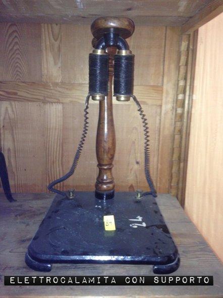

Elettrocalamita
Scuola di provenienza: Liceo Classico "P. Colletta", Avellino
Settore: Elettrostatica
Costruttori: Sconosciuto
Materiali: Rame, ferro e legno
Accessori: Supporto in ferro
Stato di conservazione: Buono
Descrizione: È un apparecchio che utilizza la magnetizzazione temporanea del ferro. È costituita essenzialmente di un nucleo di ferro dolce (con bassa percentuale di carbonico), sul quale sono avvolte due bobine di filo di rame isolato. Facendo passare corrente (20-30 volt) nelle bobine, il nucleo si magnetizza e crea all’esterno un campo magnetico che si sovrappone a quello della corrente, rafforzandolo. Si ha così un’elettrocalamita. L’elettrocalamita è un magnete temporaneo ottenuto per mezzo di una corrente elettrica. Nella pratica si danno alle calamite varie forme a secondo del loro uso: rettilinea o,più spesso, a ferro di cavallo o a doppia squadra, onde utilizzare contemporaneamente l’azione dei due poli. Siccome l’acciaio conserva in grado elevato la magnetizzazione ricevuta, introducendo in un solenoide un pezzo di acciaio si ottiene con la corrente un magnete permanente.